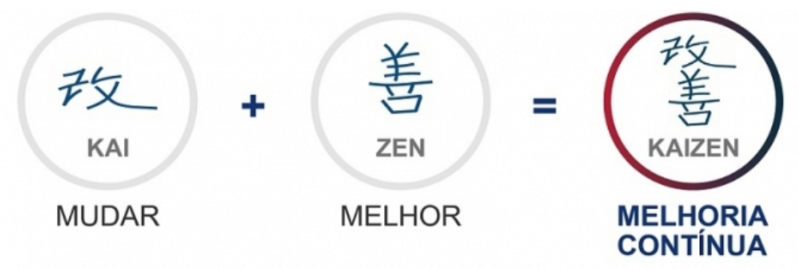

Administração de Condomínios com Transparência e Eficiência
Cuidamos do seu patrimônio para que você tenha mais tranquilidade.
Solicite uma PropostaQuem Somos
Na Kaizen Administradora de Condomínios, abraçamos o conceito japonês de "Kaizen", que significa "mudança para melhor" e representa a busca incansável pela melhoria contínua em todos os aspectos da vida. É com esse espírito que nos dedicamos a aprimorar nossos serviços a cada dia, aplicando pequenas melhorias diárias que resultam em grandes avanços e benefícios para os condomínios que administramos.
Com sede em Belo Horizonte, a Kaizen Adm nasceu com o propósito de ser o pilar de apoio para síndicos e condôminos. Contamos com uma equipe de profissionais especializados nas áreas jurídica e administrativa, que atuam com o objetivo de otimizar os custos, assegurar uma gestão eficaz e, acima de tudo, transparente, sempre pautada pela ética em todas as relações.
Nosso compromisso é simplificar a gestão condominial, oferecendo suporte completo ao síndico no desempenho das tarefas diárias, desde a orientação em questões legais e financeiras até a coordenação de serviços essenciais, garantindo assim a tranquilidade e a satisfação de todos os condôminos.
Nossos Princípios
Missão: Promover a excelência na administração de condomínios, oferecendo soluções inovadoras e transparentes que garantam a valorização patrimonial, o bem-estar e a harmonia entre os moradores.
Visão: Ser referência no mercado de administração de condomínios em Belo Horizonte e região, reconhecida pela qualidade dos serviços, pela inovação e pelo compromisso com a melhoria contínua e a satisfação dos nossos clientes.
Valores:
- Ética e Transparência: Agir com integridade e clareza em todas as nossas operações.
- Melhoria Contínua (Kaizen): Buscar constantemente aprimorar nossos processos e serviços.
- Comprometimento: Dedicar-nos integralmente às necessidades de síndicos e condôminos.
- Excelência: Entregar serviços de alta qualidade, superando as expectativas.
- Parceria: Construir relacionamentos sólidos e de confiança com nossos clientes e colaboradores.
Nossos Serviços
Soluções completas e inovadoras para a gestão do seu condomínio, garantindo tranquilidade e valorização.
Administração
- Elaborar as previsões orçamentárias;
- Controle das contas a pagar e a receber do condomínio;
- Elaborar balancetes;
- Emissão de boletos bancários;
- Gerenciamento dos arquivos documentais;
- Gestão de contratos de prestação de serviços terceirizados;
- Emissão e distribuição de cartas, circulares, notificações, multas, editais de convocação e atas das assembleias Gerais.
Síndico Profissional
- Representar o condomínio legalmente;
- Fazer cumprir a convenção, o regimento interno e as deliberações de assembleia;
- Contratação de profissionais para resolução dos problemas operacionais que o condomínio possa ter;
- Supervisões de manutenções preventivas e corretivas;
- Intermediação dos problemas do condomínio junto a terceiros;
- Imparcialidade na gestão de conflitos.
Assessoria Jurídica
Objetiva dar suporte jurídico e orientação ao síndico, ajudando-o a tomar as melhores decisões e a evitar problemas legais. Tem como finalidade garantir a segurança jurídica do condomínio, a conformidade com as leis e uma convivência harmoniosa.
Entre em Contato
Fale conosco através de um dos nossos canais. Estamos prontos para atender você.
Nossos Canais
- (31) 3028-3362
- (31) 99538-0635
- contato@admkaizen.com.br
- Rua Souza Guimarães, 93 - Sala 01- Belo Horizonte, MG